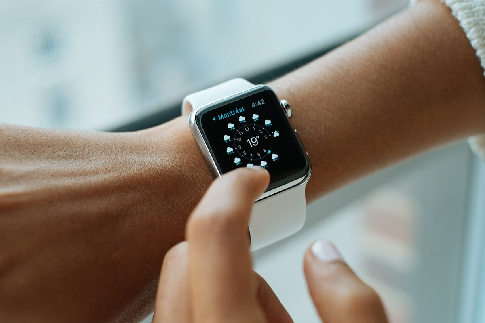

Column Wheel vs. Cam Clutches
A comparative engineering study of lateral horizontal gears versus vertical friction clutches.

Of all the mechanical complications that can be integrated into a wristwatch calibre, the chronograph is arguably the most demanding from an engineering and manufacturing standpoint. While perpetual calendars and repeaters operate through slow, deliberate gear transitions or spring-released trains, a chronograph is an interactive, on-demand timing instrument. The user depresses an external pusher with uncalibrated human finger force, instantly commanding the movement to connect, measure elapsed intervals down to fractions of a second, and reset with explosive mechanical violence. The battle between two competing architectural philosophies—the classical column wheel with lateral clutch versus the modern cam with vertical friction clutch—defines the history of precision timing.
1. The Kinetic Mechanics of the Chronograph Mechanism
A chronograph is fundamentally a secondary gear train grafted on top of a standard timekeeping movement. The base movement's fourth wheel rotates continuously, completing one revolution per minute. When the chronograph is engaged, the rotation of this fourth wheel must be coupled to a central chronograph runner wheel that carries the long elapsed-seconds hand on the dial.
This coupling mechanism must perform three discrete mechanical functions:
- Start: Interlock the running wheel train with the central chronograph hand instantly without altering the amplitude of the balance wheel.
- Stop: Disengage the connection and lock the chronograph hand rigidly in place via a spring-loaded brake to permit an accurate reading.
- Reset to Zero: Release the brake and drive the elapsed-seconds and elapsed-minutes hands back to 12 o'clock in a fraction of a second through spring-loaded reset hammers impacting heart-shaped cams.
"A chronograph is a mechanical high-wire act: it demands the brute shock resistance to survive rapid hammer resets, mated with the delicate sensitivity of an instrument measuring the fifth part of a second."
2. The Column Wheel: The Aristocrat of Chronographic Command
In haute horlogerie, the undisputed sovereign of chronograph control is the column wheel (also known as the castle wheel or roue à colonnes).
The column wheel is a circular steel turret featuring a ratchet base surmounted by a series of vertical pillars (columns) separated by cut-out notches. When the patron depresses the chronograph start/stop pusher, a operating lever advances the ratchet by one tooth. As the turret rotates, the elongated fingers of the clutch lever, the brake lever, and the reset hammer ride alternatively over the top of the columns or drop into the valleys between them.
The engineering superiority of the column wheel resides in its mechanical certainty:
- Geometric Synchronization: The height and spacing of the columns physically prevent conflicting operations from occurring simultaneously. The reset hammer can never fall while the clutch is engaged, completely eliminating the risk of tooth shearing caused by accidental pusher depression.
- Silky Pusher Tactility: Because the column wheel rotates around a central jeweled pivot with low friction, the force required to actuate the pusher is remarkably smooth, progressive, and light (typically 450 to 550 grams of pressure). The user feels a subtle, tactile click without spongy resistance.
- Aesthetic Grandeur: Hand-beveled and polished on a watchmaker's lathe, the sculptural geometry of a column wheel stands as the crowning jewel of a classical movement backplate.
3. Lateral Horizontal Clutch vs. Vertical Friction Clutch
While the column wheel acts as the brain of the chronograph, the clutch represents its kinetic transmission. Two architectures dominate the discipline:
A. The Lateral (Horizontal) Coupling Clutch
The classical system favored by traditional manufacture purists. A pivoting bridge carries an intermediate coupling wheel driven continuously by the fourth wheel. When the chronograph is started, the column wheel swings the clutch bridge horizontally, meshing the teeth of the intermediate wheel with the central chronograph runner.
- The Visual Poetry: The horizontal clutch is breathtaking to behold through a sapphire caseback. The patron can watch the gears physically advance, engage, and spin.
- The "Chronograph Jump" Phenomenon: Because the teeth of the intermediate wheel and the chronograph runner are moving when they engage, the tip of an advancing tooth may strike the tip of a receiving tooth rather than entering its valley. This causes the central chronograph second hand to jump forward or stutter by a fraction of a second upon startup—an aesthetic annoyance known as gear tooth backlash.
B. The Vertical Friction Clutch
Developed for modern chronometric performance. In a vertical clutch system, the chronograph runner is coaxially stacked directly on top of the fourth wheel. An internal friction disc (often coated in sintered bronze or DLC) is held open by scissor-like clamping jaws when stopped. When the start button is depressed, the jaws release, allowing internal disc springs to press the friction plates together vertically.
- Zero Chronograph Stutter: Because there are no meshing teeth to collide, the central second hand starts instantly with micro-metric smoothness—zero jump, zero backlash.
- Continuous Operation: A vertical clutch experiences virtually zero tooth wear, allowing the chronograph to be left running continuously as a running second hand without impacting balance amplitude or causing gear train fatigue.
- Hidden Architecture: The primary drawback is aesthetic: a vertical clutch is an encapsulated, monolithic module that conceals its internal mechanisms from the collector's gaze.
4. The Split-Seconds (Rattrapante) Complication
At the summit of chronograph engineering stands the split-seconds (rattrapante), capable of timing two simultaneous events that finish at different intervals (such as two runners in a race).
The rattrapante movement incorporates two superimposed central second hands driven by independent arbors. An auxiliary column wheel controls a pair of pincer-like steel clamps (pinces de rattrapante). When the split pusher is depressed, the pincers close upon a dedicated split-seconds wheel, arresting the lower hand while the upper hand continues tracking elapsed time. When the pusher is pressed again, the pincers release, and a spring-loaded roller snaps the stopped hand back into instantaneous alignment with the running hand. Adjusting the spring tension of these rattrapante pincers requires days of microscopic benchwork to ensure the clamps grip firmly without arresting the entire movement.
5. Hand Adjustment of Reset Heart Cams
The most violent event in any mechanical watch occurs when the reset button is depressed. The column wheel lifts the brake, disengages the clutch, and drops two heavy steel reset hammers onto hardened heart-shaped cams (cœurs) anchored to the seconds and minutes arbors.
The heart cam is a mathematical cardioid curve. When the flat face of the hammer strikes the edge of the heart, the cam is forced to rotate toward its point of lowest radius, bringing the attached hand back to exactly zero.
If the hammer hits too hard, the hand may shear off its arbor; if it hits too softly, the hand will stop at 59 seconds. On our benches, master watchmakers hand-stone the striking faces of the hammers with Arkansas oilstones and adjust the hammer eccentric pivots to an accuracy of 0.002 millimeters. The result is instantaneous, synchronized return-to-zero action that endures through hundreds of thousands of timing cycles across generations.
6. Micro-Metric Tolerances of Column Wheel Machining
To fully grasp why column wheel chronographs command such immense price premiums in the collector market, one must examine the micro-machining tolerances required to fabricate a single column wheel turret.
A column wheel in our Calibre MH-02 is barely 4.2 millimeters in diameter, yet it features eight triangular pillars machined from a solid cylindrical blank of Sandvik 20AP high-carbon chronometer steel.
The manufacturing sequence is intensely demanding:
- Five-Axis Micro-Milling: The blank is turned and notched using solid carbide endmills running at 40,000 RPM under continuous oil mist cooling. Dimensional tolerance for pillar height and angular spacing is held within ±0.0015 millimeters (1.5 microns).
- Thermal Hardening and Quenching: The milled wheel is heated in a protective vacuum furnace to 820°C and quenched in oil, raising its Rockwell hardness to 58 HRC.
- Tempering to Straw Gold: The hardened component is tempered at 240°C on a copper heating plate until the steel achieves a warm straw-yellow oxide hue, relieving internal stresses while maintaining extreme wear resistance against the sliding contact fingers.
- Pillar Flank Mirror Lapping: Each of the eight vertical pillars is hand-polished on its flanks with microscopic boxwood laps charged with diamond paste. If a pillar has even a microscopic burr, the chronograph pusher will feel gritty and inconsistent. When properly lapped, the finger glides over the column with hydraulic smoothness.
7. The Physics of Tooth Backlash in Split-Second Measurement
In traditional horizontal clutch chronographs, the problem of tooth backlash is fundamentally rooted in module geometry. In standard gearing, gear teeth are designed with a tooth clearance (backlash) of approximately 0.015 millimeters to prevent binding caused by thermal expansion.
However, when an intermediate gear rotating at high speed suddenly drops into the teeth of the stationary chronograph central wheel, this 0.015mm clearance allows the central hand to rock slightly between adjacent teeth, manifesting visually on the dial as a fractional-second jump.
In our Calibre MH-02, we introduced a proprietary split-tooth elastic runner wheel cut via wire electro-discharge machining (EDM). The teeth of the central chronograph wheel are bifurcated into twin spring blades that exert subtle preload against the incoming clutch teeth. This spring-loaded tooth design completely absorbs backlash, delivering the visual beauty of a traditional horizontal clutch with the stutter-free instantaneous engagement of a vertical clutch.